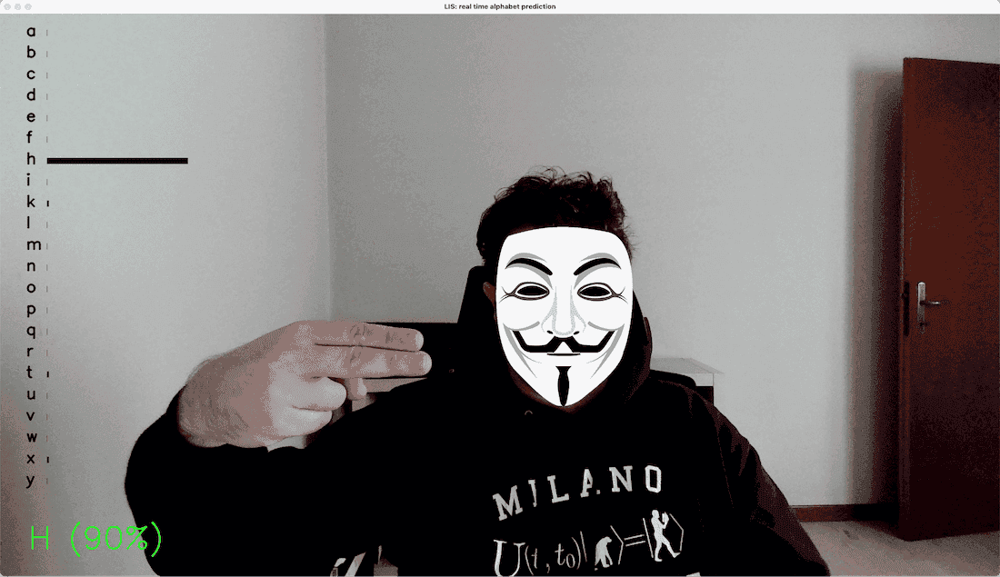

A machine learning model that detects the right hand, extracts the main features, and predicts the corresponding sign in Italian Sign Language based on hand shape.
Alfabeto LIS recognises letters of the Italian Sign Language (LIS) alphabet from a single webcam frame. It watches the user's right hand, classifies the static shape it is making, and reports the predicted letter together with a full confidence breakdown across every letter in the alphabet.
Because the classifier works frame by frame rather than over a sequence, only signs that hold a static shape can be recognised: the LIS letters G, J, S and Z all rely on in-air motion to be distinguished, so they are deliberately left out of the dataset and the model's label set, leaving 22 letters.
Each frame goes through the same feature pipeline everywhere it is used. Mediapipe's Holistic model locates the 21 3D landmarks of the right hand; the x and y coordinates are then min-max normalised against the hand's own bounding box, so the prediction is invariant to how close the hand is to the camera or where it sits in the frame. The resulting 63-value vector (21 landmarks × x, y, z) is what the Sklearn model actually sees — never the raw image.
The project exists in three layers built up over time: a set of command-line Python scripts
(rh_dataset_collection.py, train_svm.py, real_time_prediction.py)
that collect data, train the classifier and run it live against a webcam in an OpenCV window; a public
Streamlit demo that puts the same trained model in the browser with no local setup; and a rebuilt
React + FastAPI web app that streams webcam frames to a Python backend over a WebSocket for lower-latency,
more interactive real-time inference. The desktop OpenCV interface was later restyled with the same
ink-and-amber viewfinder and confidence-spectrum sidebar as the React app, so all three keep a consistent
look despite running on different stacks.
right_hand_landmarks is used, so a frame is
skipped whenever the right hand isn't visible.(v - min) / (max - min)), and flattened with z into a 63-feature
vector — the same normalisation used both at training time and at inference time.scikit-learn's SVC(probability=True)
predicts the most likely letter and returns a full probability distribution over all 22 classes.rh_dataset_collection.py
walks through each letter with an on-screen countdown and records normalised landmark vectors to a
CSV per class; train_svm.py then retrains and re-saves the model with a single command,
reporting train/test accuracy.The core of the project: the data-collection, training and real-time-prediction scripts, the
shared utils.py feature-extraction helpers, and the FastAPI backend are all plain
Python built on the same normalisation logic.
Trains and serves the classifier: an SVC(probability=True) Support Vector Machine
fit on the collected landmark dataset with train_test_split, then pickled to disk
and loaded unchanged by every front end (OpenCV, Streamlit, FastAPI).
Its Holistic solution is what turns a raw frame into 21 3D right-hand landmarks per
frame — the single input every other layer of the pipeline (normalisation, training,
inference) is built around.
Handles all image I/O and rendering on the desktop app: reading webcam frames, colour-space conversion for Mediapipe, and drawing the ink-and-amber viewfinder, hand-detection tag and confidence-spectrum sidebar directly onto the video feed.
The React app's backend: a single /ws WebSocket endpoint decodes each incoming
base64 JPEG, runs it through Mediapipe and the SVM, and streams back a JSON payload with the
hand-detection flag, the predicted letter, its confidence and the full per-letter probability
map.
Drives the webcam capture loop and the live UI: a Camera component grabs frames onto
a hidden canvas and gates the send rate on the backend's last reply, while a
PredictionSidebar renders every letter as an animated confidence bar, highlighting
the current top prediction.
Serves the trained model as a public, install-free web demo, so the classifier can be tried directly in the browser without running the Python scripts or the React/FastAPI stack locally.